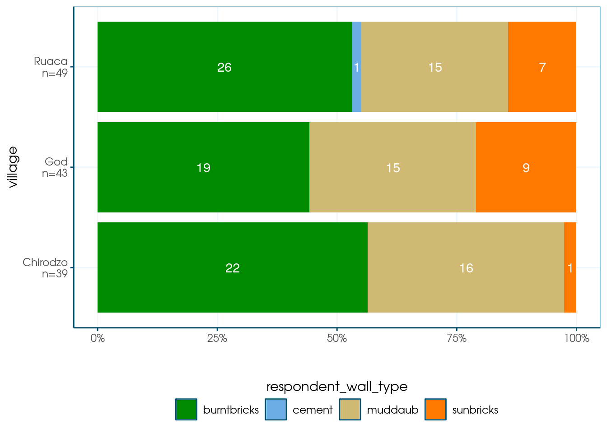
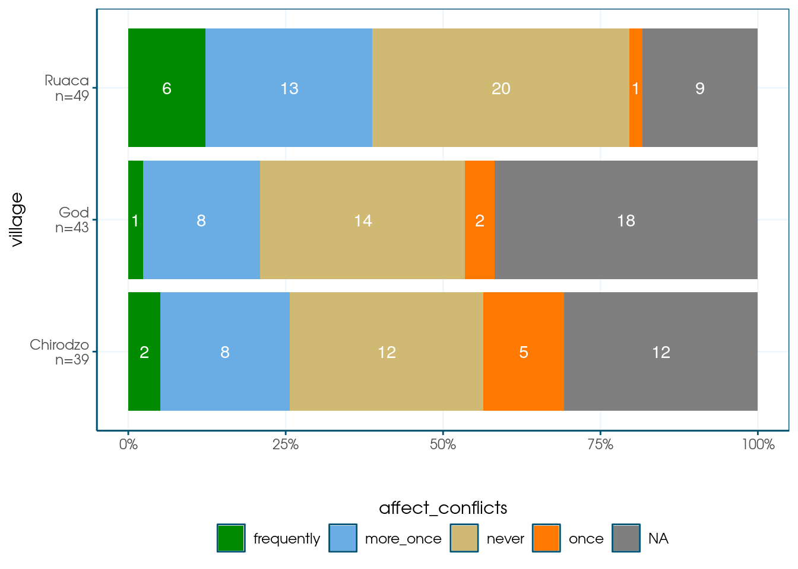

Programming with R
You can improve your R code by using programming features such as loops and functions to make your code reusable. This prevents errors, while saving you time.
Loops
Loops repeat code a number of time, they have the following structure:
## [1] 1
## [1] 2
## [1] 3
## [1] 4The i is the iterator, and each iteration of the loop it takes on the value of
a different element of the object that follows the in; in this case, i takes
on 1,2,3 and finally 4 as its values. Therefore, this code is equivalent to:
## [1] 1## [1] 2## [1] 3## [1] 4But it’s much easier to maintain! Imagine having to do 86 iterations: you would need to copy paste the code 85 times every time you want to update something. Using loops, you don’t need to copy-paste a thing, leading to fewer errors.
While loops can be a perfectly fine way of doing repeated work, most R
programmers prefer not to use loops, but instead use functions such as
lapply() and map(). However, for this you will need to know functions.
Functions
Basic Functions
A function is an R object that’s essentially a shortcut to run a bit of code.
Usually, a function takes an argument (the input), and returns an output. The
argument is always provided within parentheses. The sqrt() function, for
example, takes a number as its argument and returns the square root.
## [1] 2The beauty of functions is that they allow you to define a set of operations in one place, and re-use it as often as you want. If you then need to update the operations, all you need to do is update the function, instead of hunting down every instance of the operations throughout your script.
Take for example the following code that cleans missing data.
#define an example variable
variable1 = c(1,2,3,-99,5,6)
#change missing
variable1_cleaned = if_else(variable1 == -99, NA,variable1)
variable1_cleaned ## [1] 1 2 3 NA 5 6This works, but I need to do this at many different places in my code, and when copying the code to other places, it’s easy to make small mistakes. Moreover, if I notice my procedure for cleaning missing data is wrong, I will have to hunt down all the places I’ve copied this code to, and change it (which, again, is an error prone process).
A common piece of advice is to put any code that you have to copy-paste more than twice in a function. Once I do that, I can just call the function wherever I need to clean data; if I want to change how I deal with missings, I now only have to make changes in one place:
clean_missing <- function(input_data) {
returned_data <- if_else(input_data == -99, NA, input_data)
return(returned_data)
}I’ve pretty much copied the code I had above. Note that I could have used any
name for my argument (defined in the parentheses after function); I just thought
input_data made sense. I use the return() function to return data.
I can now just use the clean_data() wherever I want:
## [1] 1 2 3 NA 5 6Note that any variables we created in the function are kept within the function, and you can’t access them later:
## Error in eval(expr, envir, enclos): object 'returned_data' not foundThis keeps your working environment nice and clean, which again prevents problems.
Above I used the return function. This is not needed. Anything on the last line of the function that would normally be returned to the console, is used a return value of the function:
clean_missing <- function(input_data) {
if_else(input_data == -99, NA, input_data)
}
clean_missing(variable1)## [1] 1 2 3 NA 5 6Functions and the tidyverse
In the previous function I passed a vector to clean, what if want to use it in a data cleaning pipe?
It’s useful to start with the code without a function, and then to generalize from there:
data_frame <- tibble(variable1 = variable1)
data_frame %>%
mutate(variable1 = if_else(variable1 == -99,NA,variable1))## # A tibble: 6 × 1
## variable1
## <dbl>
## 1 1
## 2 2
## 3 3
## 4 NA
## 5 5
## 6 6Let’s try to put that in a function. The function will need to take a data frame and a variable name as its arguments. Results from one step in the pipe, are passed as the first argument for the next step. So make sure the data is the first argument!
clean_missing_df <- function(input_dataframe, variablename){
input_dataframe %>%
mutate(variablename = if_else(variablename == -99,NA, variablename))
}
data_frame %>%
clean_missing_df(variable1)## # A tibble: 6 × 2
## variable1 variablename
## <dbl> <dbl>
## 1 1 1
## 2 2 2
## 3 3 3
## 4 -99 NA
## 5 5 5
## 6 6 6Wait, something went wrong! R just created a new variable called “variablename”.
For a technical note on why this is, see
here. In short, we want
R too look what’s in variablename, not just use it as is. To do so, wrap the
variable name in your function definition
in {{ and }}, and change the = in mutatate to :=.
clean_missing_df <- function(input_dataframe, variablename){
input_dataframe %>%
mutate({{ variablename }} := if_else({{ variablename }} == -99,
NA,
{{ variablename }}))
}
data_frame %>%
clean_missing_df(variable1)## # A tibble: 6 × 1
## variable1
## <dbl>
## 1 1
## 2 2
## 3 3
## 4 NA
## 5 5
## 6 6Example 1: Re-using plot specifications
If you’re writing a report that includes the same type of plot in many places, it makes sense to make it into a function.
Let’s take the stacked bar plot from the plotting chapter:
library(ggthemewur)
stacked_bar_plot <- function(df, by, fill) {
# outputs a stacked bar chart
df %>%
mutate( {{ by }} := count_label( {{ by }})) %>%
ggplot(aes(y = {{ by }}, fill = {{ fill }})) +
geom_bar(position = position_fill(reverse = TRUE)) +
labs(x= "") +
theme_wur() +
scale_fill_wur_discrete() +
geom_text(stat = "count",
aes(label = after_stat(count)),
position = position_fill(vjust = 0.5, reverse = TRUE),
color = "white") +
scale_x_continuous(labels = scales::percent_format()) +
theme(legend.position="bottom") +
guides(fill = guide_legend(nrow = 1,
title.position="top",
title.hjust = 0.5))
}
count_label <- function(vector) {
# takes a vector of strings or factor,
# output a factor vector with N = N included in the labels
fct_recode(factor(vector),
!!!vector %>%
as_tibble() %>%
group_by(value) %>%
summarize(n = n()) %>%
mutate(value = as.character(value),
newlabel = paste0(value,"\nn=",n)) %>%
pull(value, name = newlabel))
}
read_csv(here("data/SAFI_clean.csv"), na = "NULL") %>%
stacked_bar_plot(village,respondent_wall_type)

Note that the count_label() function adds group counts to factor variable labels.
This is useful for the by variable.
I am not sure if I understand what the !!! operator means, but it works.
The function basically creates a named vector, where the vector values are the old
factor labels, and the vector names are new factor labels.
The new labels include the N, which is computed using a
standard group_by() %>% summarize() pipeline.
Example 2: Function to create dummies from text
Remember our code to generate dummies based on text:
read_csv("data/SAFI_clean.csv", na = "NULL") %>%
mutate(items_owned = ifelse(is.na(items_owned),"None",items_owned)) %>%
select(key_ID,items_owned) %>%
separate_longer_delim(items_owned, delim = ";") %>%
mutate(value = 1) %>%
pivot_wider(names_from = items_owned,
values_from = value,
names_prefix = "owns_",
values_fill = 0) ## Rows: 131 Columns: 14
## ── Column specification ────────────────────────────────────────────────────────
## Delimiter: ","
## chr (7): village, respondent_wall_type, memb_assoc, affect_conflicts, items...
## dbl (6): key_ID, no_membrs, years_liv, rooms, liv_count, no_meals
## dttm (1): interview_date
##
## ℹ Use `spec()` to retrieve the full column specification for this data.
## ℹ Specify the column types or set `show_col_types = FALSE` to quiet this message.## # A tibble: 131 × 19
## key_ID owns_bicycle owns_television owns_solar_panel owns_table owns_cow_cart
## <dbl> <dbl> <dbl> <dbl> <dbl> <dbl>
## 1 1 1 1 1 1 0
## 2 2 1 0 1 1 1
## 3 3 0 0 0 0 0
## 4 4 1 0 1 0 0
## 5 5 0 0 0 0 0
## 6 6 0 0 0 0 0
## 7 7 0 0 0 0 0
## 8 8 1 1 1 1 0
## 9 9 0 1 1 0 0
## 10 10 1 1 1 1 1
## # ℹ 121 more rows
## # ℹ 13 more variables: owns_radio <dbl>, owns_cow_plough <dbl>,
## # owns_solar_torch <dbl>, owns_mobile_phone <dbl>, owns_motorcyle <dbl>,
## # owns_None <dbl>, owns_fridge <dbl>, owns_electricity <dbl>,
## # owns_sofa_set <dbl>, owns_lorry <dbl>, owns_sterio <dbl>,
## # owns_computer <dbl>, owns_car <dbl>I now want to apply this same principle to months_lack_food column.
I could copy-paste the code, but the better solution is to make a function:
create_dummies <- function(df,stringvar,prefix="",delim = ";") {
#Function that generates dummies from a string variable
#containing multi-response answers
#returns dataset without original var, but with dummies.
df %>%
separate_longer_delim({{ stringvar }}, delim = delim) %>%
mutate(value = 1) %>%
pivot_wider(names_from = {{stringvar}},
values_from = value,
names_prefix = prefix,
values_fill = 0)
}
read_csv(here("data/SAFI_clean.csv"), na = "NULL") %>%
mutate(items_owned = ifelse(is.na(items_owned),"None",items_owned)) %>%
create_dummies(stringvar = items_owned, prefix = "owns_") %>%
create_dummies(months_lack_food,"lack_food_")## Rows: 131 Columns: 14
## ── Column specification ────────────────────────────────────────────────────────
## Delimiter: ","
## chr (7): village, respondent_wall_type, memb_assoc, affect_conflicts, items...
## dbl (6): key_ID, no_membrs, years_liv, rooms, liv_count, no_meals
## dttm (1): interview_date
##
## ℹ Use `spec()` to retrieve the full column specification for this data.
## ℹ Specify the column types or set `show_col_types = FALSE` to quiet this message.## # A tibble: 131 × 43
## key_ID village interview_date no_membrs years_liv respondent_wall_type
## <dbl> <chr> <dttm> <dbl> <dbl> <chr>
## 1 1 God 2016-11-17 00:00:00 3 4 muddaub
## 2 2 God 2016-11-17 00:00:00 7 9 muddaub
## 3 3 God 2016-11-17 00:00:00 10 15 burntbricks
## 4 4 God 2016-11-17 00:00:00 7 6 burntbricks
## 5 5 God 2016-11-17 00:00:00 7 40 burntbricks
## 6 6 God 2016-11-17 00:00:00 3 3 muddaub
## 7 7 God 2016-11-17 00:00:00 6 38 muddaub
## 8 8 Chirodzo 2016-11-16 00:00:00 12 70 burntbricks
## 9 9 Chirodzo 2016-11-16 00:00:00 8 6 burntbricks
## 10 10 Chirodzo 2016-12-16 00:00:00 12 23 burntbricks
## # ℹ 121 more rows
## # ℹ 37 more variables: rooms <dbl>, memb_assoc <chr>, affect_conflicts <chr>,
## # liv_count <dbl>, no_meals <dbl>, instanceID <chr>, owns_bicycle <dbl>,
## # owns_television <dbl>, owns_solar_panel <dbl>, owns_table <dbl>,
## # owns_cow_cart <dbl>, owns_radio <dbl>, owns_cow_plough <dbl>,
## # owns_solar_torch <dbl>, owns_mobile_phone <dbl>, owns_motorcyle <dbl>,
## # owns_None <dbl>, owns_fridge <dbl>, owns_electricity <dbl>, …The code is now clear, I can update the function in one place and all variables will be updated accordingly. Plus, if I want to use the same code in another project, I can easily do it.
Map()
map() works just like loop, but generally faster. It takes two arguments:
- An iterable object, like a vector or list
- A function
It will then apply the function to each element of the object. It will return a list with the results of each iteration.
For example, to get the the square root for each of the numbers in a vector:
## [[1]]
## [1] 2
##
## [[2]]
## [1] 3
##
## [[3]]
## [1] 4You may not quite like the fact that map returns a list, but quite a few things in
R use lists. modelsummary() for example. Suppose I want to regress the same y on
a number of combinations of independent variables, I can put the combination of
varaibles in a list, and then run my model for each element of the list.
I use reformulate() to convert strings into a formula ‘lm()’ can use. Also,
I use ~ to create
a purrr-style inline anonymous function
within map().
library(modelsummary)
# generate some sample data
df <- tibble(y = rnorm(50),x1 = rnorm(50),x2 = rnorm(50))
# define a list of models:
# the left-hand sides are the labels
# the right-hand sides the independent variables I will pass to reformulate.
models <-
list("X1 only" = "x1",
"X2 only" = "x2",
"Both" = c("x1","x2"))
# map() works nicely in dplyr pipe!
# the ~ creates a purrr-style anonymous function, where .x is current element of the list
models %>%
map(~lm(reformulate(.x, response="y"),data = df)) %>%
modelsummary(output = "flextable")
| X1 only | X2 only | Both |
|---|---|---|---|
(Intercept) | 0.105 | 0.128 | 0.129 |
(0.139) | (0.142) | (0.143) | |
x1 | -0.102 | -0.104 | |
(0.157) | (0.158) | ||
x2 | 0.120 | 0.122 | |
(0.157) | (0.158) | ||
Num.Obs. | 50 | 50 | 50 |
R2 | 0.009 | 0.012 | 0.021 |
R2 Adj. | -0.012 | -0.009 | -0.021 |
AIC | 143.9 | 143.7 | 145.2 |
BIC | 149.6 | 149.4 | 152.9 |
Log.Lik. | -68.937 | -68.854 | -68.624 |
F | 0.420 | 0.582 | 0.504 |
RMSE | 0.96 | 0.96 | 0.95 |